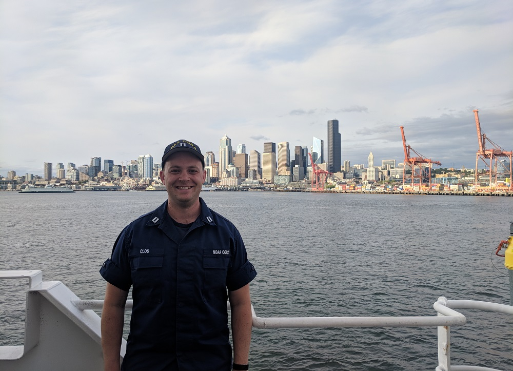
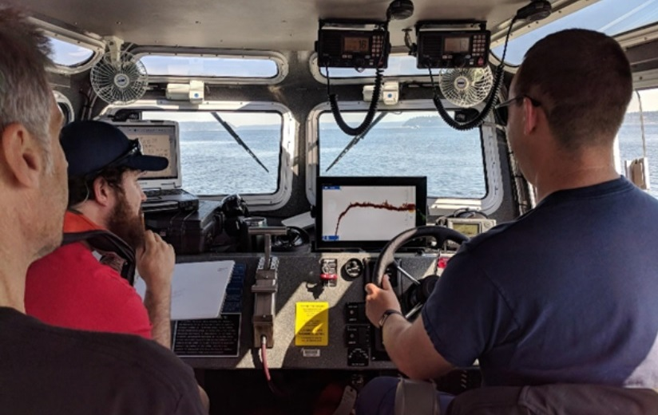

Allow me to Introduce Myself
Traversing the waterways of our continent, mapping the seafloor to promote safe navigation, and developing leadership and interpersonal skills was meaningful for me, but I am eagerly looking ahead to persuing the field of Computer Science with equal passion. I am particularly interested in A.I., vessels collecting data autonomously at sea (or on land), imbeded systems, GNSS(GPS) and inertial positioning systems and a myraid of programming languages.
I graduated from the University of Washington in 2008 with a BS in Chemical Oceanography. This led to a my first career with the National Oceanic and Atmospheric Administration (NOAA) where I worked as a contractor and then served as a NOAA Corps Officer (Lieutenant, O-3) until early 2019. In addition to deck watch officer duties (navigating ships, managing personnel), I specialized in the making nautical charts. Utilizing multibeam echosounders and sophisticated positioning systems, we could create high resolution bathymetric plots of the sea floor.
From an early age I was fascinated with aquariums, fish and the ocean. I spent my eight grade summer in the waters of British Columbia and Alaska learning, exploring and gaining a deep appreciation for the rugged, natural world. This would prove formative and lead me to persue this passion academically and then professionally.